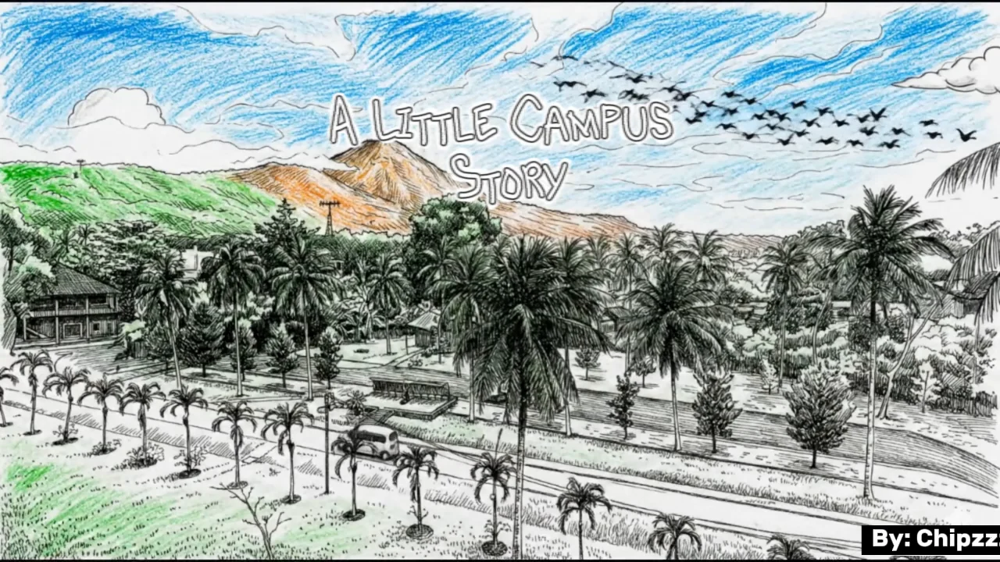
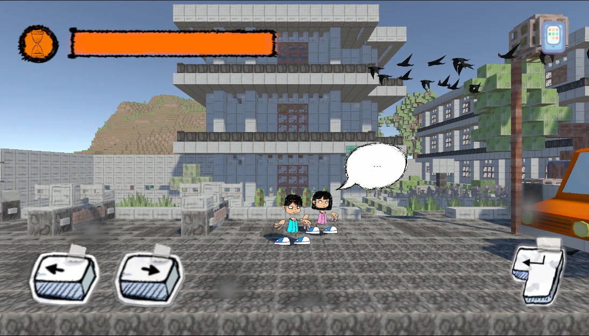

SEBUAH PETUALANGAN KECIL
Satu kampus.
Banyak cerita.
Tentang kuliah, keraguan, dan keberanian untuk terus melangkah. Kenali UNKLAB lewat perjalanan Arthur.
Dalam pengembangan · APK segera hadir
01 / KENALAN DULU
Kampusnya nyata.
Ceritanya dekat.
A Little Campus Story adalah game petualangan berbasis cerita untuk Android. Ikuti Arthur melewati keseharian mahasiswa, menjelajahi kampus, dan menghadapi keraguannya sendiri.
Jelajahi kampus
Ikuti cerita
Pelan-pelan juga tetap melangkah.

02 / DI BALIK PERJALANAN
Mulai dari Arthur.
Keraguan belum tentu hilang. Tapi Arthur bisa memilih untuk tetap maju. Baca cerita lengkapnya dan kenali dunia di balik permainan.
SAMPAI KETEMU DI KAMPUS
Siap melangkah?
Versi Android sedang disiapkan. Perjalanannya segera dimulai.